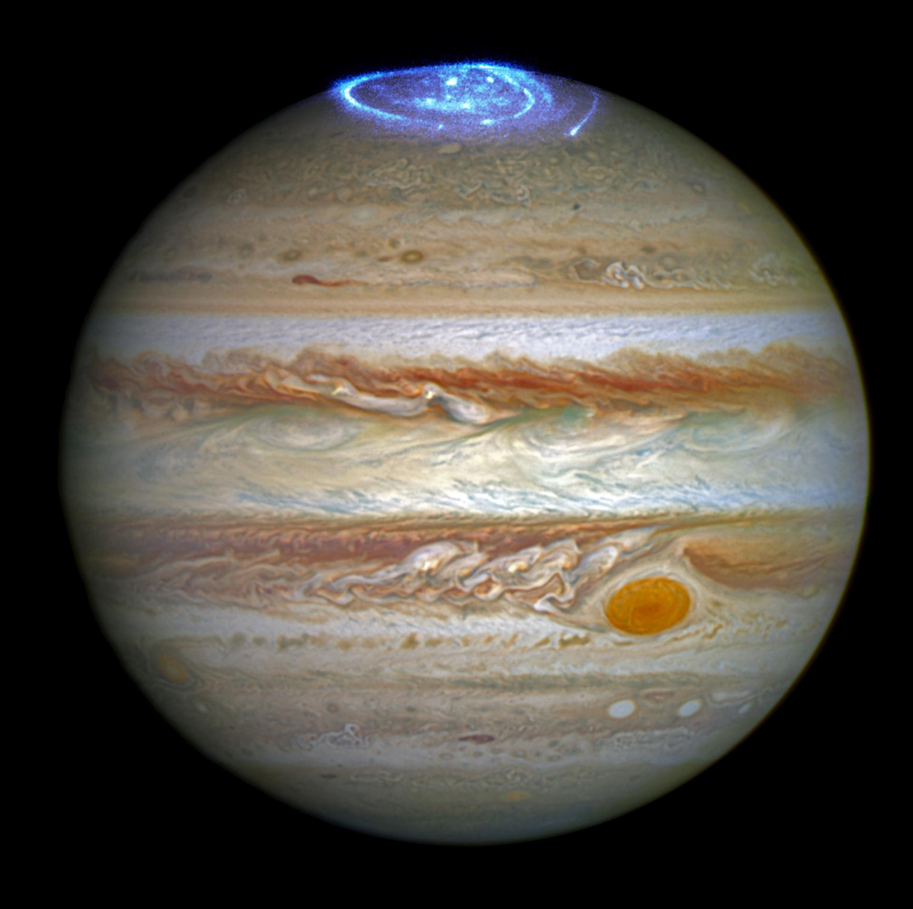

ÓRBITAJUPITER
El gigante del sistema solar. Su Gran Mancha Roja es una tormenta más grande que la Tierra que lleva siglos activa.
Diametro
139.820 kmGravedad
24,8 m/s²Duracion del dia
9,9 horasTemperatura media
-110 °C
ÓRBITAEl gigante del sistema solar. Su Gran Mancha Roja es una tormenta más grande que la Tierra que lleva siglos activa.
Diametro
139.820 kmGravedad
24,8 m/s²Duracion del dia
9,9 horasTemperatura media
-110 °C